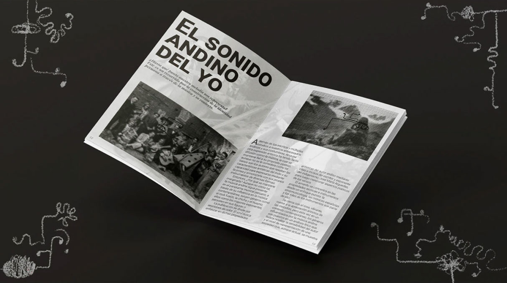
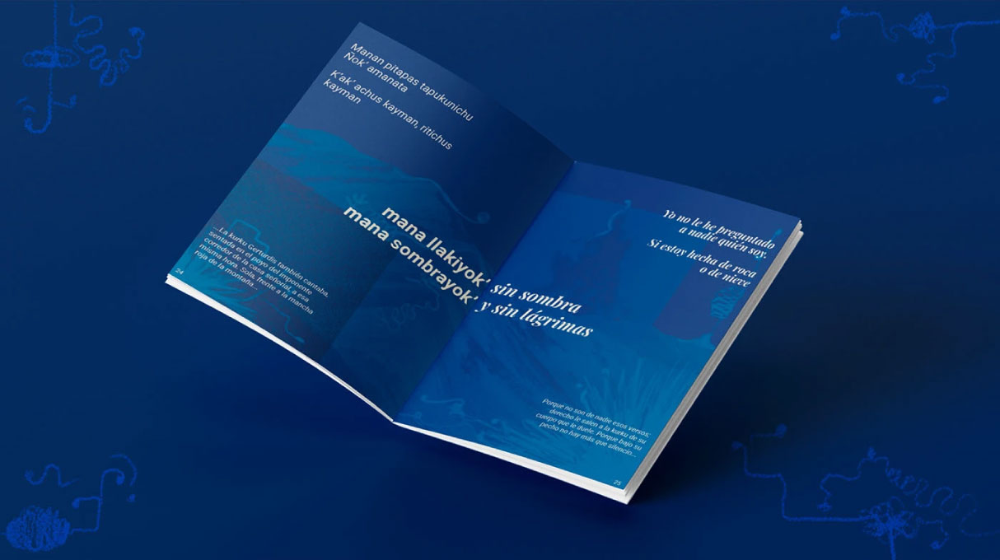
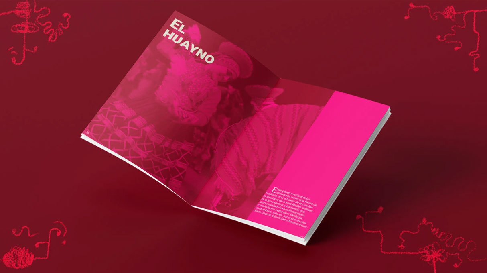

Notas de identidad
Diseñar la memoria sonora. Notas de Identidad es una pieza editorial de 96 páginas que busca revalorar la dimensión poética de la música andina. Lejos de ser lineal, la publicación se estructura mediante un sistema cromático donde el color dicta el tono del análisis: una transición gradual de lo histórico a lo emocional, de lo técnico a lo contemporáneo.
El recorrido inicia en gris, estableciendo una base documental. Esta sección plantea una introducción etnomusicológica objetiva, necesaria para contextualizar el origen histórico sin distracciones visuales.
La inmersión se profundiza en azul con El poema del indio. Aquí, el diseño adopta una perspectiva arguediana: subjetiva, lírica y emocional. La diagramación responde al verso, priorizando la sensibilidad sobre la estructura rígida.
El amarillo ilumina la técnica en Versos vivientes. Esta sección rompe el mito de la simplicidad andina, revelando visualmente la precisión y complejidad interpretativa que se esconde detrás de la ejecución musical en los Andes.

Finalmente, el rosa estalla en Del bombo a la batería. Un cierre vibrante que traza la metamorfosis sonora: del huayno tradicional a la chicha y el rock fusión, demostrando gráficamente cómo la raíz se mantiene viva en la modernidad.
